clean-up-donor-mail-clutter no score
apps chrome + thunderbird
My browser and mail client are both cluttered from the food-bank fundraiser. Clear the browser's whole browsing history and close every tab but one, then get the donor thank-you replies out of my inbox into a folder of their own so the inbox only holds the rest. Show me both when it's clean.
task config + evaluator
{
"config": [
{
"type": "execute",
"parameters": {
"command": "mkdir -p /home/user/foodbank && python3 -c \"\nimport os,time,random,mailbox,email.utils\nbase='/home/user/.thunderbird'\nos.makedirs(base,exist_ok=True)\nopen(os.path.join(base,'profiles.ini'),'w').write('[Profile0]\\nName=default\\nIsRelative=1\\nPath=abc.default\\nDefault=1\\n\\n[General]\\nStartWithLastProfile=1\\n')\np=os.path.join(base,'abc.default','Mail','Local Folders')\nos.makedirs(p,exist_ok=True)\nos.makedirs(os.path.join(base,'abc.default','Mail','Local Folders','Inbox.sbd'),exist_ok=True)\nmsgs=[('Maria Delgado','maria.delgado@gmail.com','Thank you for the donation receipt','Hi Priya, thanks so much for the receipt for my 250 dollar gift to the Riverside Food Bank drive. Glad to help.'),\n('Tom Okafor','tokafor@northwindlaw.com','Re: Thank you for supporting the fall drive','Happy to support again this year. Please add me to next spring appeal list.'),\n('Bernard Liu','bliu@harborcredit.org','Invoice 4471 for pallet delivery','Attached is the invoice for the two pallets delivered to the warehouse on the 14th. Net 30.'),\n('Anita Rowe','anita.rowe@cityschools.k12','Volunteer shift swap for Saturday','Can I move from the 9am sorting shift to the 1pm one this Saturday?'),\n('Grace Mbeki','g.mbeki@outlook.com','Thank you note for the fundraiser','What a wonderful evening. Thank you for the kind words about our family gift.'),\n('Warehouse Ops','ops@riversidefoodbank.org','Freezer temperature log week 42','Weekly log attached, no excursions recorded.'),\n('Daniel Fisk','dfisk@fiskplumbing.com','Re: Thanks for your gift to the drive','You are welcome. Our crew will match staff donations again in December.'),\n('Lena Petrov','lena.p@bridgeworks.io','Question about matching gift form','Does my employer form need a signature from your finance lead?'),\n('Sam Whitfield','swhitfield@gmail.com','Thanks and receipt confirmation','Received the thank-you letter for my monthly gift, everything looks correct.'),\n('City Permits','permits@riversidecity.gov','Street closure permit approved','Your permit for the November 8 collection event has been approved.'),\n('Hannah Brooks','hbrooks@meadowvet.com','Re: Thank you for the donation','Delighted to give. The clinic will run a pet-food collection bin in the lobby too.'),\n('Ivan Costa','icosta@riversidefoodbank.org','Board packet due Friday','Please send your fundraiser summary numbers before Friday noon.')]\nmb=mailbox.mbox(os.path.join(p,'Inbox'))\nt=time.time()-800000\nfor i,(n,a,s,b) in enumerate(msgs):\n m=mailbox.mboxMessage()\n m['From']='%s <%s>'%(n,a); m['To']='Priya Raman <priya@riversidefoodbank.org>'\n m['Subject']=s; m['Date']=email.utils.formatdate(t+i*21000); m['Message-ID']='<fb%d@riversidefoodbank.org>'%i\n m.set_payload(b+'\\n'); m.set_unixfrom('From - '+time.ctime(t+i*21000))\n mb.add(m)\nmb.flush(); mb.close()\n\" && printf 'Riverside Food Bank fall drive notes\\n' > /home/user/foodbank/notes.txt",
"shell": true
}
},
{
"type": "launch",
"parameters": {
"command": [
"thunderbird"
]
}
},
{
"type": "launch",
"parameters": {
"command": [
"google-chrome",
"https://en.wikipedia.org/wiki/Food_bank"
]
}
}
],
"evaluator": {
"func": "check_include_exclude",
"result": {
"type": "vm_command_line",
"command": "echo ostg-v16",
"shell": true
},
"expected": {
"type": "rule",
"rules": {
"include": [
"__judge_decides__"
]
}
}
}
}
step 1 00:06:14
THINKINGLet me understand the task. The user wants me to:
1. Clear the browser's whole browsing history
2. Close every tab but one in the browser
3. Move donor thank-you replies out of the inbox into a new folder (so inbox only holds the rest)
4. Show both when clean
I have a browser (Chrome with Wikipedia Food bank tab) and Thunderbird Mail open. Let me start by taking a screenshot to see the current state, then work through the tasks.
Let me start with the browser tasks. First, let me clear browsing history. I'll use Ctrl+H to open history, then clear data. Actually, in Chrome, Ctrl+Shift+Del opens the "Clear browsing data" dialog directly. Let me start there.
Let me take a screenshot first to confirm the current state.
ACTIONI'll start by taking a screenshot to assess the current state of both the browser and mail client.
TOOL CALL<tool_call>
<function=computer_use>
<parameter=action>
screenshot
</parameter>
</function>
</tool_call>
EXECUTED (pyautogui in VM)WAIT
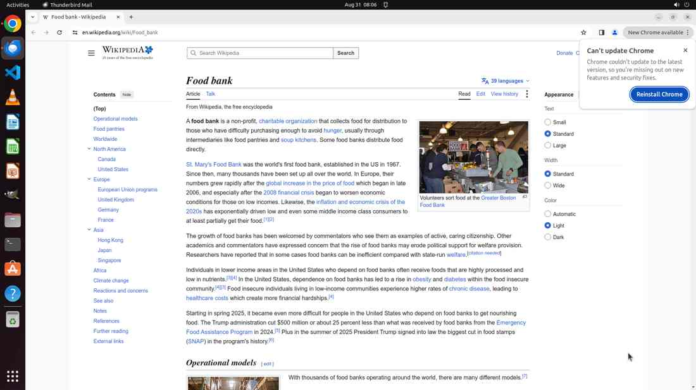
step 2 00:06:24
THINKINGLet me plan out the tasks:
1. Clear browser's whole browsing history - I'll use Ctrl+Shift+Del in Chrome
2. Close every tab but one - there's one tab currently visible (Food bank - Wikipedia), but maybe more. Let me check. Actually it looks like only one tab. But wait, the task says "close every tab but one" - so there might be multiple. Let me look. The tab bar shows only one tab "Food bank - Wikipedia". Hmm, but the task says the browser is cluttered. Let me first close the "Can't update Chrome" popup, then check tabs.
Let me start with clearing browsing history using Ctrl+Shift+Del. First, let me make sure Chrome is focused. Let me click on the browser area first, then use the keyboard shortcut.
Actually, let me first close the Chrome update popup by clicking the X.
ACTIONLet me start with the browser tasks. First, I'll close the Chrome update popup, then clear the browsing history.
TOOL CALL<tool_call>
<function=computer_use>
<parameter=action>
left_click
</parameter>
<parameter=coordinate>
[983, 128]
</parameter>
</function>
</tool_call>
EXECUTED (pyautogui in VM)pyautogui.click(1889, 138)
step 3 00:06:32
THINKINGThe popup is closed. Now let me clear the browsing history. I'll use Ctrl+Shift+Del to open the "Clear browsing data" dialog. Let me first click on the browser page to make sure it's focused, then press the shortcut.
Actually the browser should be focused. Let me press Ctrl+Shift+Del.
ACTIONThe popup is closed. Now I'll open the "Clear browsing data" dialog with Ctrl+Shift+Del to clear the whole browsing history.
TOOL CALL<tool_call>
<function=computer_use>
<parameter=action>
left_click
</parameter>
<parameter=coordinate>
[468, 416]
</parameter>
</function>
</tool_call>
EXECUTED (pyautogui in VM)pyautogui.click(899, 449)
step 4 00:06:44
THINKINGNow let me open the Clear browsing data dialog with Ctrl+Shift+Del.
ACTIONNow I'll open the Clear browsing data dialog.
TOOL CALL<tool_call>
<function=computer_use>
<parameter=action>
key
</parameter>
<parameter=keys>
["ctrl", "shift", "delete"]
</parameter>
</function>
</tool_call>
EXECUTED (pyautogui in VM)pyautogui.hotkey("ctrl", "shift", "delete")
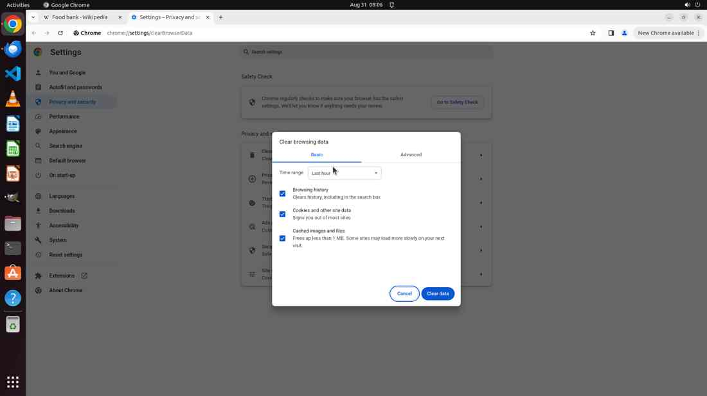
step 5 00:06:56
THINKINGThe Clear browsing data dialog is open. I need to:
1. Set the time range to "All time" to clear the WHOLE browsing history
2. Make sure "Browsing history" is checked
The task says "clear the browser's whole browsing history". So I should set time range to "All time" and at minimum check "Browsing history".
The task is specifically about browsing history. I'll set the time range to "All time" and ensure Browsing history is checked. I should be careful — the user only asked to clear browsing history, so I should focus on that. However, having Cookies and Cached images checked would sign out of sites. To be safe and precise, I should probably just check "Browsing history" and uncheck the others, since the task is specifically about browsing history.
Actually, let me reconsider. The user says "clear the browser's whole browsing history". The most precise interpretation is to clear browsing history (the history records). I'll set time range to "All time" and check only "Browsing history" to avoid unintended side effects like signing out of accounts or clearing cookies.
Let me first click the Time range dropdown and select "All time".
ACTIONThe Clear browsing data dialog is open. I need to set the time range to "All time" to clear the whole history. Let me click the Time range dropdown.
TOOL CALL<tool_call>
<function=computer_use>
<parameter=action>
left_click
</parameter>
<parameter=coordinate>
[485, 435]
</parameter>
</function>
</tool_call>
EXECUTED (pyautogui in VM)pyautogui.click(932, 470)
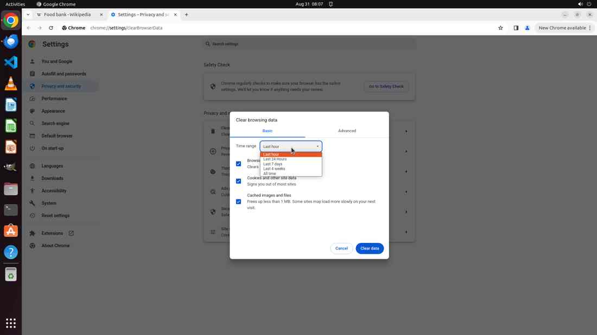
step 6 00:07:06
THINKINGThe dropdown is open. I'll select "All time".
ACTIONThe dropdown is open. I'll select "All time" to clear the whole history.
TOOL CALL<tool_call>
<function=computer_use>
<parameter=action>
left_click
</parameter>
<parameter=coordinate>
[450, 516]
</parameter>
</function>
</tool_call>
EXECUTED (pyautogui in VM)pyautogui.click(864, 557)
step 7 00:07:17
THINKINGTime range is now "All time". Now I need to consider which checkboxes to select. The task specifically says "clear the browser's whole browsing history". To be precise and avoid unintended side effects (like signing out of accounts via clearing cookies), I should:
- Keep "Browsing history" checked ✓
- Uncheck "Cookies and other site data" - this signs out of sites, which is a side effect the user didn't ask for
- Uncheck "Cached images and files" - optional, not asked for
The task is specifically about browsing history. I'll uncheck the other two to be precise, then click "Clear data".
Let me uncheck "Cookies and other site data" first.
ACTIONTime range is now "All time". Since the task is specifically about browsing history, I'll uncheck the Cookies and Cached images options to avoid side effects like signing out of accounts, keeping only "Browsing history" checked.
TOOL CALL<tool_call>
<function=computer_use>
<parameter=action>
left_click
</parameter>
<parameter=coordinate>
[400, 538]
</parameter>
</function>
</tool_call>
EXECUTED (pyautogui in VM)pyautogui.click(768, 581)
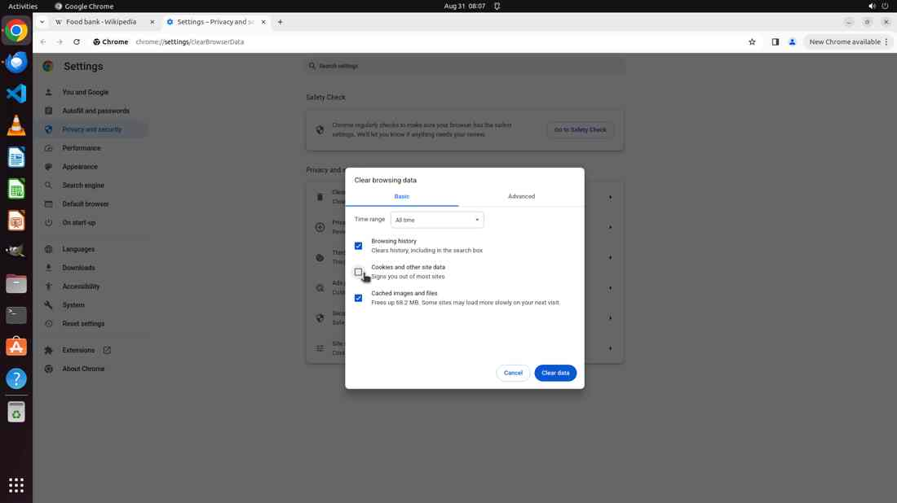
step 8 00:07:30
THINKINGCookies and other site data is now unchecked. Now let me uncheck "Cached images and files".
ACTIONCookies is unchecked. Now I'll uncheck "Cached images and files" too, leaving only Browsing history selected.
TOOL CALL<tool_call>
<function=computer_use>
<parameter=action>
left_click
</parameter>
<parameter=coordinate>
[400, 591]
</parameter>
</function>
</tool_call>
EXECUTED (pyautogui in VM)pyautogui.click(768, 638)
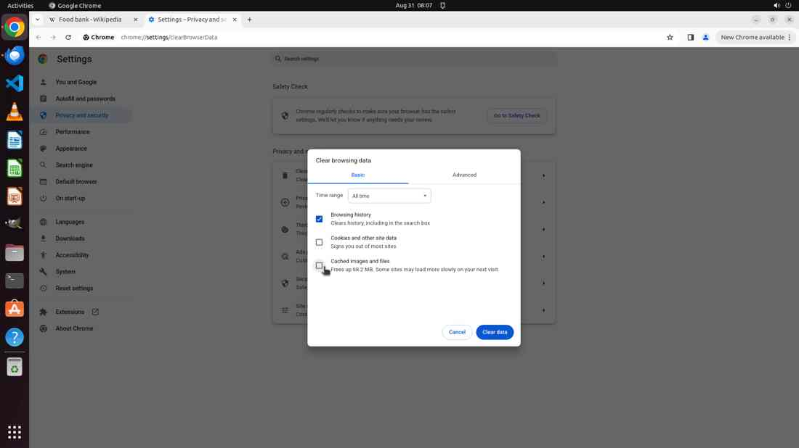
step 9 00:07:41
THINKINGNow only "Browsing history" is checked, time range is "All time". Let me click "Clear data" to clear the browsing history.
ACTIONNow only "Browsing history" is checked with "All time" range. I'll click "Clear data".
TOOL CALL<tool_call>
<function=computer_use>
<parameter=action>
left_click
</parameter>
<parameter=coordinate>
[617, 737]
</parameter>
</function>
</tool_call>
EXECUTED (pyautogui in VM)pyautogui.click(1185, 796)
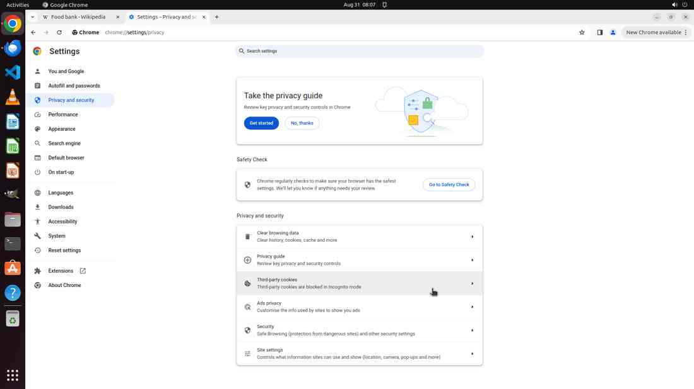
step 10 00:07:55
THINKINGThe browsing history has been cleared. The dialog closed and now shows the Privacy and security settings page.
Now I have two tabs open:
1. "Food bank - Wikipedia"
2. "Settings – Privacy and security" (this one is now active)
The task says "close every tab but one". So I need to close all but one tab. Currently there are two tabs. Let me close the Settings tab (the current one), which will leave the Food bank - Wikipedia tab.
Wait, but I need to think about which one to keep. The task says "close every tab but one" - it doesn't specify which one to keep. It's cleaner to keep the original Food bank - Wikipedia tab and close the Settings tab that I opened. Actually, it doesn't really matter which one to keep, but keeping the Wikipedia one makes sense as it's the "content" tab.
Actually, let me reconsider. There might be more tabs I haven't seen. Currently I see two tabs. Let me close the Settings tab to leave just the Wikipedia tab.
Let me click the X on the Settings tab.
ACTIONThe browsing history has been cleared. Now I have two tabs open. I'll close the Settings tab, keeping the original Food bank - Wikipedia tab.
TOOL CALL<tool_call>
<function=computer_use>
<parameter=action>
left_click
</parameter>
<parameter=coordinate>
[292, 42]
</parameter>
</function>
</tool_call>
EXECUTED (pyautogui in VM)pyautogui.click(561, 45)
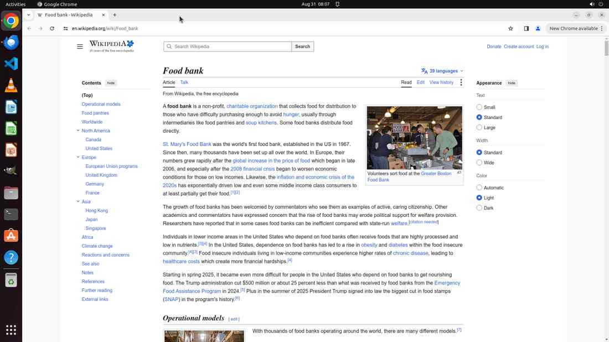
step 11 00:08:07
THINKINGNow only one tab remains: "Food bank - Wikipedia". The browser is now clean - history cleared and only one tab.
Now let me move to the mail client. I need to switch to Thunderbird. I'll click on the Thunderbird icon in the taskbar (the left sidebar, the second icon which looks like a blue bird).
Actually, let me verify - the browser is done:
1. ✓ Cleared whole browsing history (All time, browsing history only)
2. ✓ Closed every tab but one (only Food bank - Wikipedia remains)
Now for the mail client. I need to:
3. Create a new folder for donor thank-you replies
4. Move the donor thank-you reply emails from the inbox into that folder
5. Show both when clean
Let me switch to Thunderbird. I'll click on the Thunderbird icon in the left sidebar.
ACTIONThe browser is now clean - history cleared and only one tab remains. Now I'll switch to Thunderbird Mail to handle the inbox. Let me click the Thunderbird icon.
TOOL CALL<tool_call>
<function=computer_use>
<parameter=action>
left_click
</parameter>
<parameter=coordinate>
[17, 121]
</parameter>
</function>
</tool_call>
EXECUTED (pyautogui in VM)pyautogui.click(32, 130)
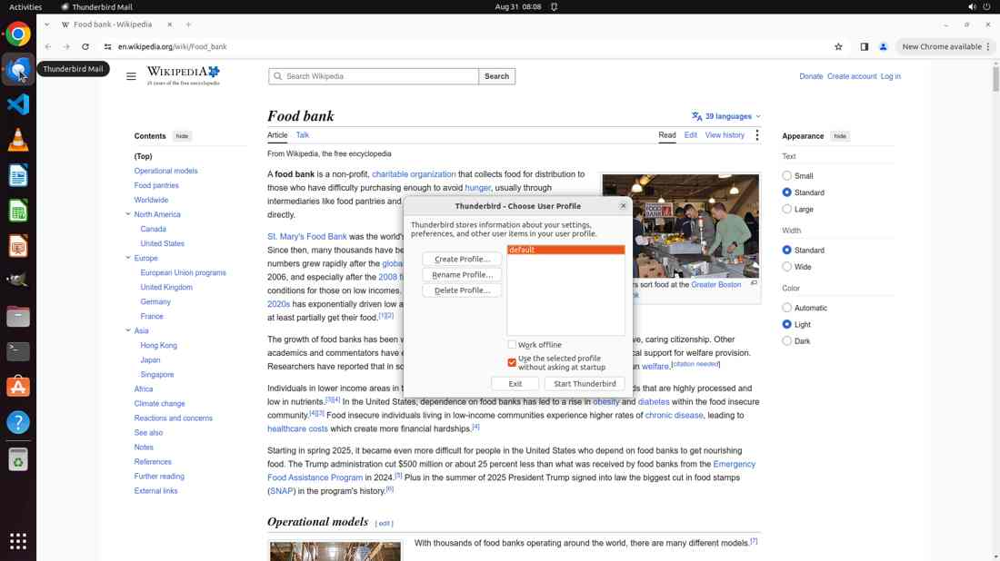
step 12 00:08:16
THINKINGThunderbird is opening with a profile chooser. The "default" profile is selected. I'll click "Start Thunderbird".
ACTIONThunderbird is launching with a profile chooser. I'll start with the default profile.
TOOL CALL<tool_call>
<function=computer_use>
<parameter=action>
left_click
</parameter>
<parameter=coordinate>
[581, 681]
</parameter>
</function>
</tool_call>
EXECUTED (pyautogui in VM)pyautogui.click(1116, 736)
step 13 00:08:26
THINKINGThunderbird is loading but hasn't fully appeared yet. The screen still shows the Wikipedia page. Let me wait a moment for Thunderbird to open, then take a screenshot.
ACTIONThunderbird is still loading. Let me wait a moment for it to fully open.
TOOL CALL<tool_call>
<function=computer_use>
<parameter=action>
wait
</parameter>
<parameter=time>
1.0
</parameter>
</function>
</tool_call>
EXECUTED (pyautogui in VM)WAIT
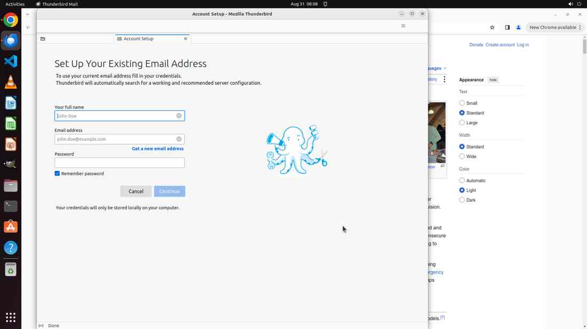
step 14 00:08:41
THINKINGThunderbird opened with an Account Setup screen. It seems there's no existing account configured, and it's prompting to set up a new email address. But the task mentions there's an inbox with donor thank-you replies. This is a problem - it seems the account setup is being prompted, which suggests no account is configured.
Wait, but the task says "get the donor thank-you replies out of my inbox". This implies there IS an existing inbox with emails. Maybe this is a new profile, or maybe there's already an account and I need to skip this setup.
Let me cancel this account setup to see if there's an existing account in the main Thunderbird window. Let me click "Cancel".
ACTIONThunderbird is showing an Account Setup screen. The task implies there's an existing inbox with emails, so let me cancel this setup to check for an existing account.
TOOL CALL<tool_call>
<function=computer_use>
<parameter=action>
left_click
</parameter>
<parameter=coordinate>
[231, 579]
</parameter>
</function>
</tool_call>
EXECUTED (pyautogui in VM)pyautogui.click(443, 625)
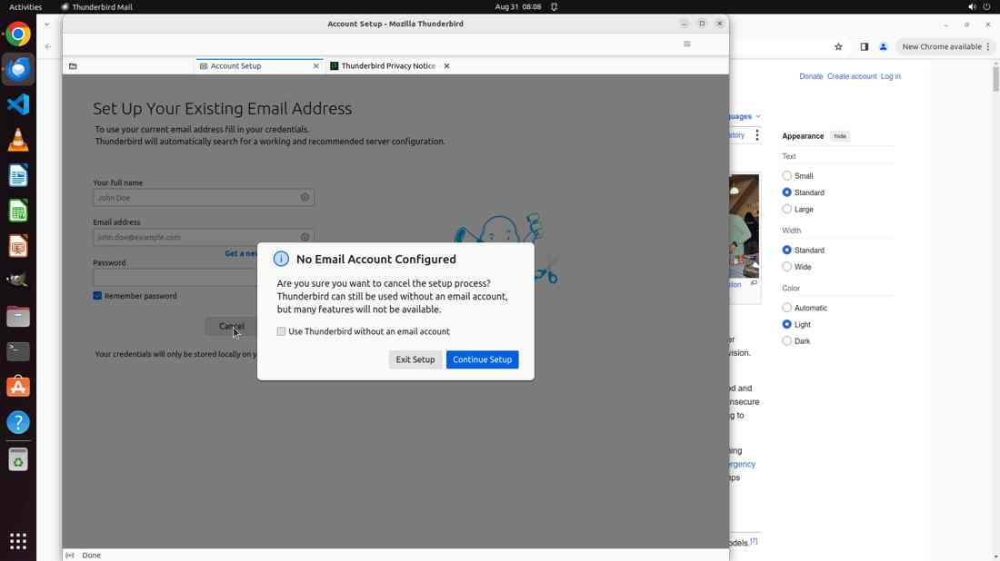
step 15 00:08:57
THINKINGA dialog says "No Email Account Configured". This means the default profile has no email account. But the task implies there's an existing inbox with donor thank-you replies.
Hmm. This could mean:
1. The default profile is not the one with the email - maybe there's another profile with the actual email account configured.
2. Or maybe I need to use "Use Thunderbird without an email account" to get into the main window and there IS a local account.
Wait, the profile chooser only showed "default". Let me think. The task says "my inbox" - so there must be an inbox somewhere.
Actually, maybe this profile is a fresh one. But the task describes an inbox cluttered with emails. Let me reconsider - perhaps the email account exists but needs this setup, OR perhaps I should check if there's a local folder structure.
Actually, let me reconsider the whole situation. The task mentions "My browser and mail client are both cluttered from the food-bank fundraiser." This suggests the mail client already has emails. But this profile shows no email account configured.
Let me select "Use Thunderbird without an email account" and click "Exit Setup" to get into the main Thunderbird window. Then I can check the folder structure - maybe there's a local account or the emails are stored locally.
Actually wait - if no email account is configured, there wouldn't be an inbox with emails. Unless... Let me think about this differently.
Hmm, maybe the profile chooser showed more profiles but I only saw "default" highlighted. Let me first get into the main window to assess. Let me check the checkbox "Use Thunderbird without an email account" and click "Exit Setup".
Actually, let me reconsider. This might be a scenario where the email account was already set up in a previous session but the profile got reset, OR the intended account is set up somewhere.
Let me get into the main window first to see what's there. I'll check "Use Thunderbird without an email account" and click "Exit Setup".
ACTIONA dialog says "No Email Account Configured". Let me use Thunderbird without an email account to get into the main window and check the folder structure - the inbox may be a local one.
TOOL CALL<tool_call>
<function=computer_use>
<parameter=action>
left_click
</parameter>
<parameter=coordinate>
[280, 588]
</parameter>
</function>
</tool_call>
EXECUTED (pyautogui in VM)pyautogui.click(538, 635)
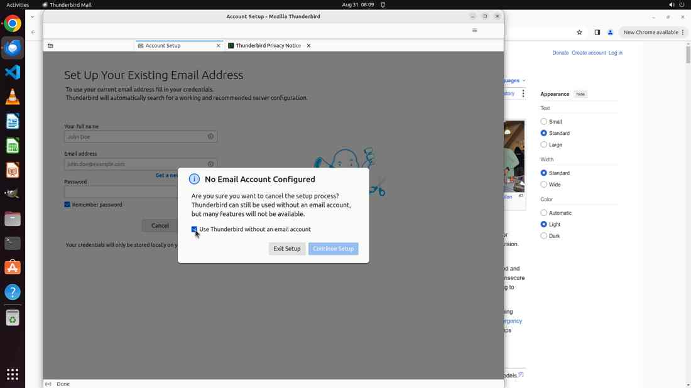
step 16 00:09:14
THINKINGThe checkbox "Use Thunderbird without an email account" is now checked. Let me click "Exit Setup" to get into the main Thunderbird window.
ACTIONThe checkbox is now enabled. Let me click "Exit Setup" to enter the main window.
TOOL CALL<tool_call>
<function=computer_use>
<parameter=action>
left_click
</parameter>
<parameter=coordinate>
[414, 638]
</parameter>
</function>
</tool_call>
EXECUTED (pyautogui in VM)pyautogui.click(795, 689)
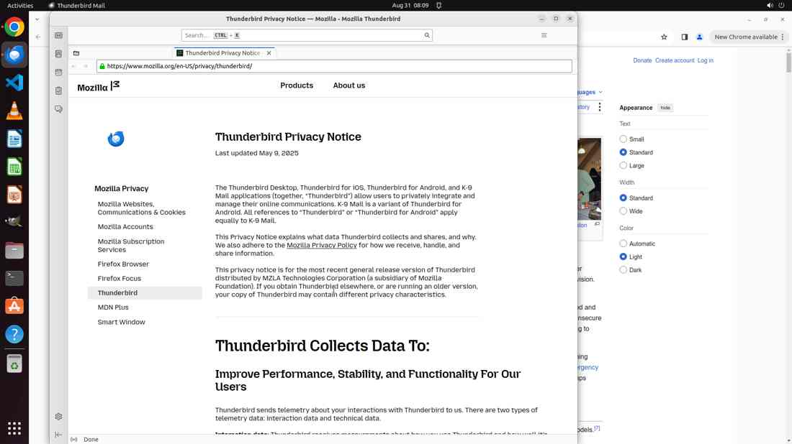
step 17 00:09:32
THINKINGNow I'm in the main Thunderbird window. It shows a "Thunderbird Privacy Notice" page (a web page inside Thunderbird). The left sidebar has icons. There's no folder list visible with an Inbox. This confirms there's no email account configured in this "default" profile.
This is a problem. The task says "get the donor thank-you replies out of my inbox". But this profile has no email account, so there's no inbox with emails.
Wait - maybe there's a different profile. Let me reconsider. The profile chooser earlier showed only "default". But maybe there are more profiles that weren't shown. Actually, in the profile manager, it should list all profiles. Let me reconsider.
Hmm, actually the task is set up in this environment. Maybe the emails are stored as a local mail account, or maybe I need to look more carefully. Let me click on the folders icon in the left sidebar to see the folder structure.
Actually, let me reconsider. The left side has a vertical toolbar with icons. Let me look:
- Envelope icon (top)
- A folder/person icon
- Calendar icon
- Tasks icon
- Chat icon
- Settings gear (bottom)
There's no account/inbox list visible. This strongly suggests no mail account exists.
Wait, but the task explicitly says "my inbox" has donor thank-you replies. This is a contradiction. Let me think about what's going on.
Possibility 1: There's a separate profile that has the email account. The profile manager only showed "default" but maybe I need to check more carefully.
Possibility 2: The emails are in a local folder (Local Folders) that comes with any Thunderbird installation.
Possibility 3: This is a fresh install and the task environment was supposed to have an account configured but it's in a different profile.
Let me first close this privacy notice tab and look at the folder pane. Let me click on the folders icon in the left toolbar (the second icon that looks like a folder at coordinate around [122, 87]).
Actually, the leftmost narrow column has icons. Let me click on the folder icon to show the folder list.
Actually, I notice the layout is a bit unusual. Let me look more carefully. The narrow left column (x≈90) has the main navigation icons, and the next column (x≈122) has folder-related icons.
Let me first close this privacy notice tab by clicking the X on it, then examine the folder structure.
Actually, let me reconsider the whole situation. Maybe the intended email profile is not "default". When Thunderbird starts, it showed the profile chooser because "Use the selected profile without asking at startup" — wait, it was checked. And it showed only "default".
Hmm, but there could be multiple profiles. The profile chooser lists all profiles. It showed only "default" highlighted/selected. Let me re-examine — actually in the first profile screenshot, the list area showed "default" highlighted in orange. There might have been only one profile.
Let me think about this differently. Perhaps this OSWorld task environment has the email set up in a way I'm not seeing. Let me explore the folder pane.
Let me close the privacy notice tab first.
ACTIONI'm now in the main Thunderbird window, but it's showing a Privacy Notice page with no visible inbox. Let me close this tab and examine the folder structure to find the inbox.
TOOL CALL<tool_call>
<function=computer_use>
<parameter=action>
left_click
</parameter>
<parameter=coordinate>
[337, 118]
</parameter>
</function>
</tool_call>
EXECUTED (pyautogui in VM)pyautogui.click(647, 127)
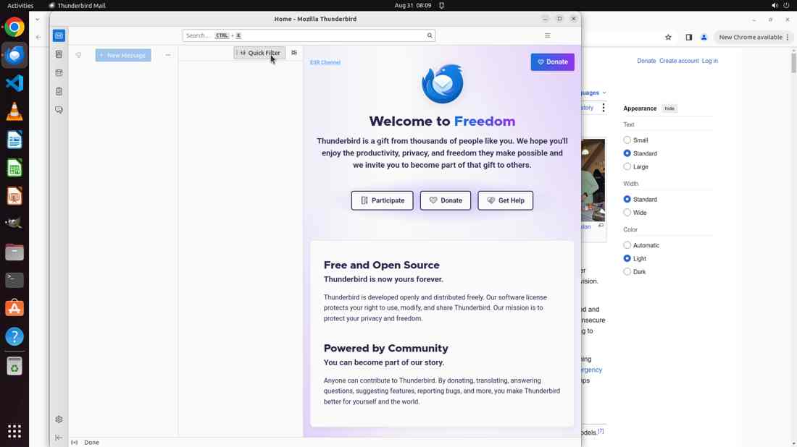
step 18 00:09:59
THINKINGNow I see the Thunderbird main window showing a "Welcome to Freedom" page. The folder pane (left) is empty - there's no Inbox, no account, no folders listed. This confirms there's no email account configured in this default profile.
This is a significant issue. The task requires moving "donor thank-you replies" from "my inbox" to a new folder. But there's no inbox here.
Let me reconsider. Maybe the email account is in a different profile. The profile manager showed "default" but maybe there are other profiles. Let me think.
Actually, wait. Let me reconsider whether the emails might be accessible via a different profile. The Thunderbird profile manager (accessible via Edit > Settings or via a -profile flag) lists all profiles. When I first launched, the profile chooser only showed "default".
But maybe I should check the profile manager more thoroughly. Or maybe the mail is stored as mbox files in a local directory that I can access.
Actually, let me step back and reconsider the entire task environment. This is an OSWorld-style task. The environment is supposed to be set up with:
1. A browser with cluttered history (✓ - Wikipedia food bank page was open)
2. A mail client with an inbox full of donor thank-you replies
But this default profile has no account. This is strange.
Wait — maybe the mail client that's "cluttered" is NOT Thunderbird. But Thunderbird is the mail client shown in the taskbar. Let me reconsider.
Actually, maybe the intended setup uses a local mail account or the emails are pre-loaded into the profile's Mail folder. Let me check the filesystem. But first, let me reconsider whether there's a different profile.
Actually, let me reconsider the profile chooser. When I clicked the Thunderbird icon the first time, it showed a profile chooser with "default" selected. It's possible there are other profiles that just weren't visible because the list was small. Let me re-open the profile manager to check.
Alternatively, maybe the emails are in a "Local Folders" account that I need to look at. But the folder pane is empty, which means no Local Folders even.
Hmm, let me think about this from a different angle. The task environment likely has a specific Thunderbird profile with a configured email account (possibly an IMAP/POP account or a local account) with pre-loaded emails. Since the "default" profile is empty, maybe:
- The real profile is a different one
- OR the task expects me to look at the profile that's set to be used
Let me open the profile manager to check all available profiles. I can do this via a terminal: `thunderbird -ProfileManager` but Thunderbird is already running. Actually, I can access profile manager via the Help menu or by using the -P flag from a new process.
Actually, a simpler approach: Let me check the home directory for Thunderbird profiles. Let me open a terminal.
Wait, but before going down that path, let me reconsider. Maybe the emails ARE in this profile but under "Local Folders" which just isn't showing because there's no account.
Actually, the empty folder pane strongly indicates no accounts AND no local folders with content.
Let me open a terminal to investigate the Thunderbird profile directory. This will help me understand the setup. Let me click the terminal icon in the left sidebar.
Actually, let me reconsider. Perhaps the task setup intends for there to be an email account and it's just that the profile I need is a different one. Let me check the profiles via terminal.
Let me open the terminal application.
ACTIONThe folder pane is empty - there's no email account or inbox in this "default" profile. The task implies there's an inbox with donor replies, so there may be a different profile configured. Let me open a terminal to investigate the Thunderbird profile setup.
TOOL CALL<tool_call>
<function=computer_use>
<parameter=action>
left_click
</parameter>
<parameter=coordinate>
[17, 622]
</parameter>
</function>
</tool_call>
EXECUTED (pyautogui in VM)pyautogui.click(32, 672)
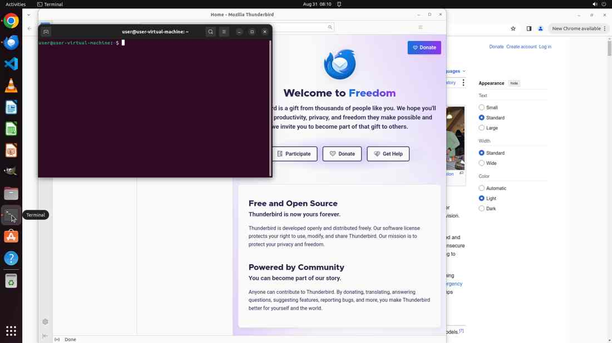
step 19 00:10:09
THINKINGA terminal is open. Let me investigate the Thunderbird profile directory to understand the setup. Let me list the profiles.
ACTIONA terminal is open. Let me investigate the Thunderbird profile directory to find where the emails might be stored.
TOOL CALL<tool_call>
<function=computer_use>
<parameter=action>
left_click
</parameter>
<parameter=coordinate>
[250, 277]
</parameter>
</function>
</tool_call>
EXECUTED (pyautogui in VM)pyautogui.click(480, 299)
step 20 00:10:18
THINKINGLet me investigate the Thunderbird profiles. Let me type a command to look at the profiles directory.
ACTIONLet me look at the Thunderbird profiles directory to understand the setup.
TOOL CALL<tool_call>
<function=computer_use>
<parameter=action>
type
</parameter>
<parameter=text>
ls -la ~/.thunderbird/ && echo "---" && cat ~/.thunderbird/profiles.ini 2>/dev/null
</parameter>
</function>
</tool_call>
EXECUTED (pyautogui in VM)pyautogui.typewrite("ls -la ~/.thunderbird/ && echo \"---\" && cat ~/.thunderbird/profiles.ini 2>/dev/null")
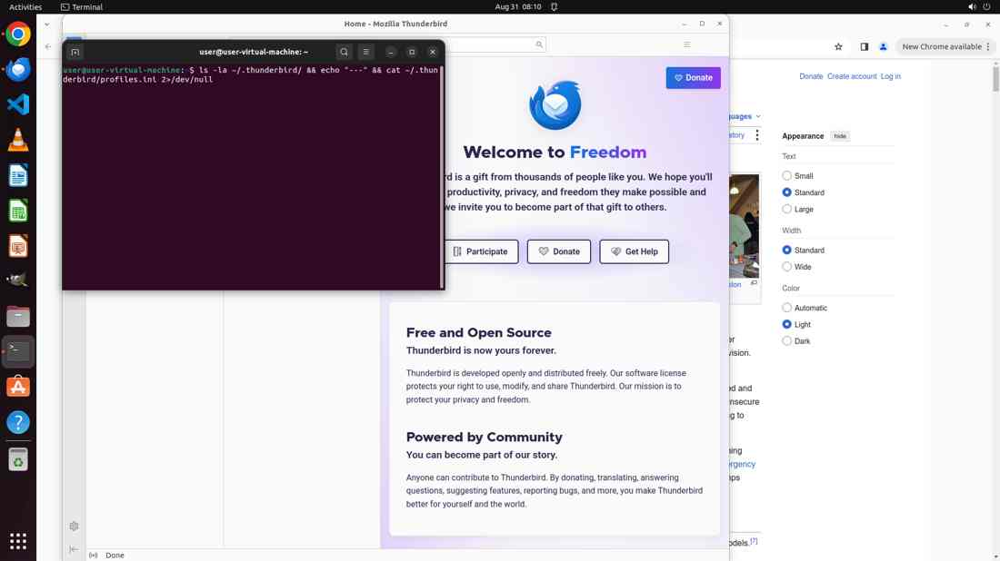
step 21 00:10:29
THINKINGLet me press Enter to run the command.
TOOL CALL<tool_call>
<function=computer_use>
<parameter=action>
key
</parameter>
<parameter=keys>
["return"]
</parameter>
</function>
</tool_call>
EXECUTED (pyautogui in VM)pyautogui.press("return")
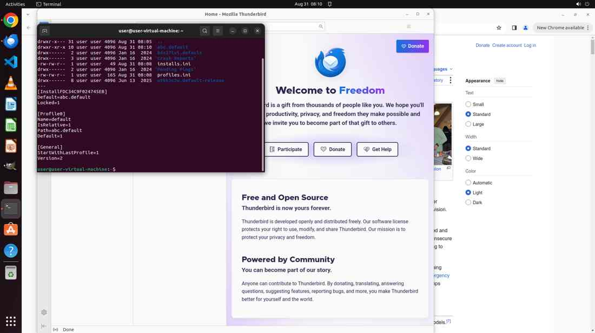
step 22 00:10:49
THINKINGNow I can see the profiles.ini content:
- There are two profile directories: `abc.default` and `b6x27ivi.default` and `wtkk3c2w.default-release`
- The profiles.ini shows:
- [InstallFDC34C9F024745EB]
Default=abc.default
Locked=1
- [Profile0]
Name=default
IsRelative=1
Path=abc.default
Default=1
- [General]
StartWithLastProfile=1
Version=2
So the default profile is `abc.default` (Name=default). But there's also `b6x27ivi.default` and `wtkk3c2w.default-release` directories.
Interesting. The profile `abc.default` is the "default" profile that I launched. But there might be an email account in `wtkk3c2w.default-release` or `b6x27ivi.default`.
Wait, the profiles.ini only registers Profile0 = abc.default. The other directories (b6x27ivi.default, wtkk3c2w.default-release) are NOT registered in profiles.ini, which means they won't show in the profile manager.
Hmm, but the task's email might be in one of those unregistered profiles. Let me investigate the Mail directories in each profile to find where the emails (Inbox) are stored.
Let me check which profile has a Mail folder with an Inbox containing emails. Let me look at the structure.
Let me run a command to find Inbox files.
ACTIONI can see there are multiple profile directories. The registered default is `abc.default`, but there are also `b6x27ivi.default` and `wtkk3c2w.default-release`. Let me search for where the actual Inbox with emails is stored.
TOOL CALL<tool_call>
<function=computer_use>
<parameter=action>
type
</parameter>
<parameter=text>
find ~/.thunderbird -iname "Inbox" -type f 2>/dev/null | while read f; do echo "=== $f ($(wc -l < "$f") lines) ==="; done
</parameter>
</function>
</tool_call>
EXECUTED (pyautogui in VM)pyautogui.typewrite("find ~/.thunderbird -iname \"Inbox\" -type f 2>/dev/null | while read f; do echo \"=== $f ($(wc -l < \"$f\") lines) ===\"; done")
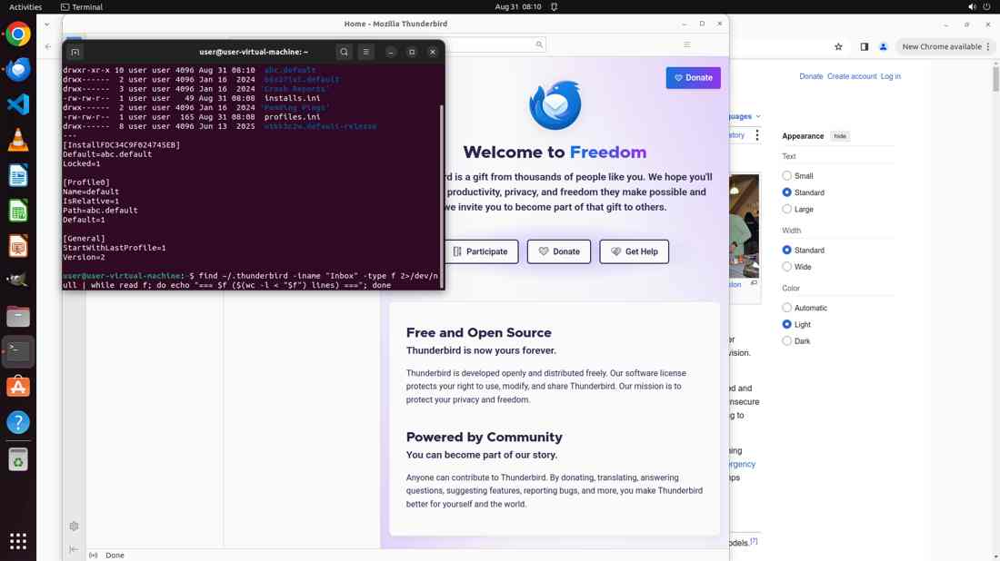
step 23 00:11:00
THINKINGThe command is typed but I need to press Enter to run it. Let me press Enter.
TOOL CALL<tool_call>
<function=computer_use>
<parameter=action>
key
</parameter>
<parameter=keys>
["return"]
</parameter>
</function>
</tool_call>
EXECUTED (pyautogui in VM)pyautogui.press("return")
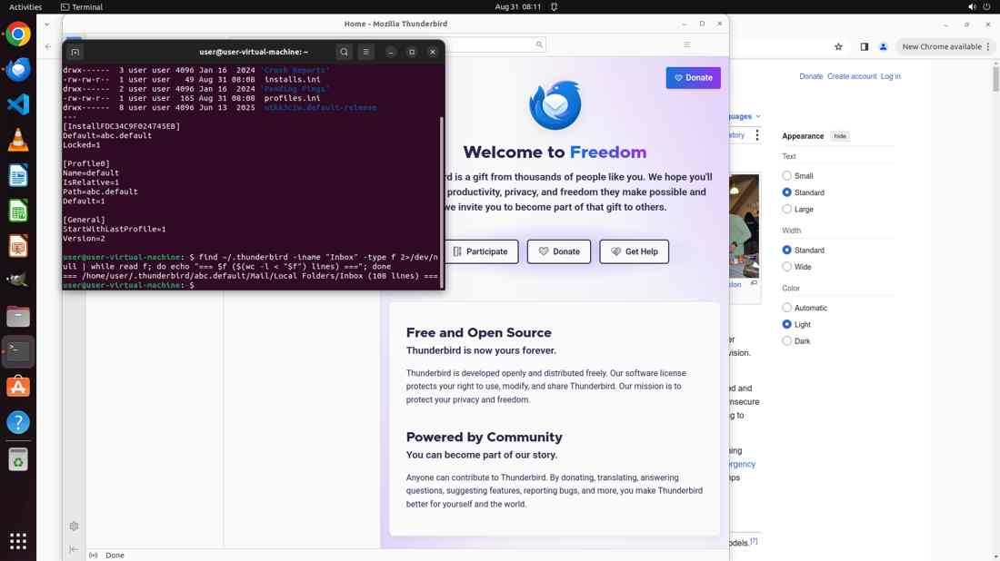
step 24 00:11:27
THINKINGNow I can see:
`=== /home/user/.thunderbird/abc.default/Mail/Local Folders/Inbox (108 lines) ===`
So the Inbox with 108 lines is in the `abc.default` profile under `Mail/Local Folders/Inbox`. This is a Local Folders account (offline/local mailbox), not an IMAP/POP account. That's why the folder pane was empty — actually wait, Local Folders should show in the folder pane even without an email account. But the folder pane was empty.
Hmm, wait. The folder pane was empty because when I launched, there was no account set up so Thunderbird didn't show Local Folders. But the Local Folders/Inbox exists with 108 lines (which means emails are stored there).
Actually, the issue might be that the "Use Thunderbird without an email account" mode doesn't show Local Folders, OR the Local Folders account needs to be created.
Wait, but the Inbox file exists in abc.default/Mail/Local Folders/Inbox. This means the emails ARE in the default profile's Local Folders. The reason they weren't showing is that Thunderbird in "no account" mode might not display Local Folders, OR I need to look at the folder pane more carefully.
Actually, let me reconsider. When I exited setup with "Use Thunderbird without an email account", the folder pane was empty. But Local Folders should still appear. Maybe I need to refresh, or maybe Local Folders only appears when there's at least one thing.
Let me look at the Inbox content to understand the emails. Let me view the Inbox file to identify the donor thank-you replies.
Actually, before that, let me reconsider my approach. The task is to:
1. Move donor thank-you replies from inbox to a new folder
2. Show both when clean
The proper way to do this is through the Thunderbird GUI. I need to:
1. Get the Local Folders / Inbox to appear in the folder pane
2. Create a new folder (e.g., "Donor Thank-Yous" or similar)
3. Move the thank-you reply emails to that folder
But the folder pane is empty. Let me investigate why. Maybe the account needs to be set up, or maybe I need to look at the Local Folders account.
Actually, the simplest explanation: In Thunderbird, "Local Folders" is a special account that always exists. But when you use "Thunderbird without an email account", it might not show. Let me re-check the Thunderbird window - maybe I need to scroll or the folder pane just wasn't populated.
Actually, wait. Let me reconsider. Let me first examine the Inbox content so I understand what emails are there and which are "donor thank-you replies". Let me cat the Inbox file.
Actually, the Inbox file is in mbox format. Let me look at it. But it's 108 lines, which might be a few emails. Let me view it. Let me redirect to a readable format. Let me use grep to see the From and Subject lines.
ACTIONThe Inbox with emails is in the `abc.default` profile under `Mail/Local Folders/Inbox` (108 lines). So this IS the correct profile, and the emails are in Local Folders. Let me examine the Inbox content to identify the donor thank-you replies.
TOOL CALL<tool_call>
<function=computer_use>
<parameter=action>
type
</parameter>
<parameter=text>
grep -nE "^(From |Subject:|From:)" ~/.thunderbird/abc.default/Mail/"Local Folders"/Inbox
</parameter>
</function>
</tool_call>
EXECUTED (pyautogui in VM)pyautogui.typewrite("grep -nE \"^(From |Subject:|From:)\" ~/.thunderbird/abc.default/Mail/\"Local Folders\"/Inbox")
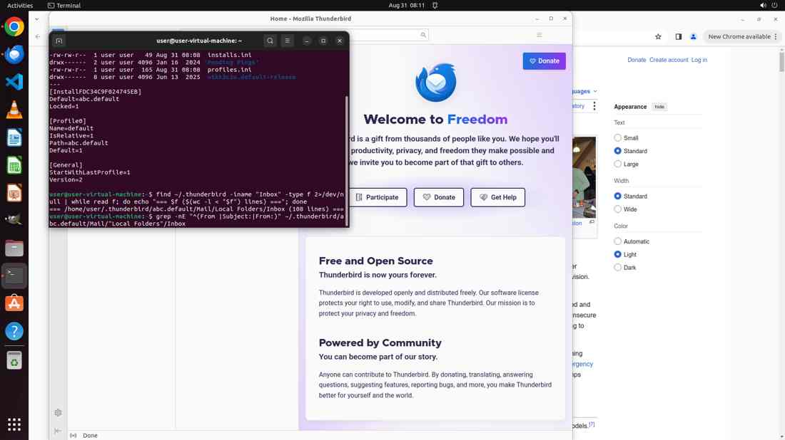
step 25 00:11:36
THINKINGThe command is typed. Let me press Enter to run it.
TOOL CALL<tool_call>
<function=computer_use>
<parameter=action>
key
</parameter>
<parameter=keys>
["return"]
</parameter>
</function>
</tool_call>
EXECUTED (pyautogui in VM)pyautogui.press("return")
step 26.1 00:12:00
THINKINGNow I can see some of the emails. The output is scrolled and I can see the lower part. Let me read the visible entries:
- Line 38: From: Grace Mbeki <g.mbeki@outlook.com>
- Line 40: Subject: Thank you note for the fundraiser
- Line 46: From: MAILER-DAEMON Mon Aug 31 00:05:10 2026
- Line 47: From: Warehouse Ops <ops@riversidefoodbank.org>
- Line 49: Subject: Freezer temperature log week 42
- Line 55: From: MAILER-DAEMON Mon Aug 31 00:05:10 2026
- Line 56: From: Daniel Fisk <dfisk@fiskplumbing.com>
- Line 58: Subject: Re: Thanks for your gift to the drive
- Line 64: From: MAILER-DAEMON Mon Aug 31 00:05:10 2026
- Line 65: From: Lena Petrov <lena.p@bridgevorks.io>
- Line 67: Subject: Question about matching gift form
- Line 73: From: MAILER-DAEMON Mon Aug 31 00:05:10 2026
- Line 74: From: Sam Whitfield <swhitfield@gmail.com>
- Line 76: Subject: Thanks and receipt confirmation
- Line 82: From: MAILER-DAEMON Mon Aug 31 00:05:10 2026
- Line 83: From: City Permits <permits@riversidecity.gov>
- Line 85: Subject: Street closure permit approved
- Line 91: From: MAILER-DAEMON Mon Aug 31 00:05:10 2026
- Line 92: From: Hannah Brooks <hbrooks@meadowvet.com>
- Line 94: Subject: Re: Thank you for the donation
- Line 100: From: MAILER-DAEMON Mon Aug 31 00:05:10 2026
- Line 101: From: Ivan Costa <icosta@riversidefoodbank.org>
- Line 103: Subject: Board packet due Friday
I need to scroll up to see the beginning (lines 1-37). The output scrolled. Let me scroll up in the terminal to see the earlier emails. There are more emails above. Let me scroll up in the terminal.
Actually, it's better to re-run the command with a way to see all of it. The terminal window is small. Let me instead make the terminal bigger or use a different approach. Let me just scroll up in the terminal to see the top part.
Actually, let me re-run with the output piped so I can read it. But the terminal is small. Let me maximize the terminal first, or just scroll up.
Let me scroll up in the terminal to see the earlier entries (lines 1-37).
ACTIONI can see several emails now. Let me scroll up in the terminal to see the earlier emails in the inbox.
TOOL CALL<tool_call>
<function=computer_use>
<parameter=action>
mouse_move
</parameter>
<parameter=coordinate>
[250, 345]
</parameter>
</function>
</tool_call>
<tool_call>
<function=computer_use>
<parameter=action>
scroll
</parameter>
<parameter=pixels>
3
</parameter>
</function>
</tool_call>
EXECUTED (pyautogui in VM)pyautogui.moveTo(480, 372)
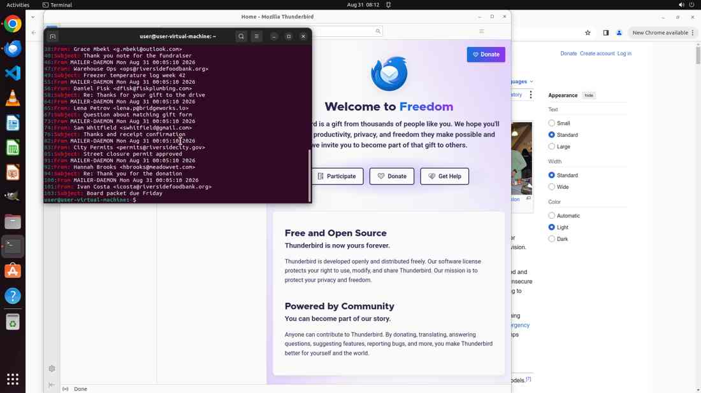
step 26.2 00:12:04
EXECUTED (pyautogui in VM)pyautogui.scroll(3)

step 27.1 00:12:20
THINKINGNow I can see more emails:
- Line 11: From: Tom Okafor <t.okafor@northwindlaw.com>
- Line 13: Subject: Re: Thank you for supporting the fall drive
- Line 19: From: MAILER-DAEMON Mon Aug 31 00:05:10 2026
- Line 20: From: Bernard Liu <b.liu@harborcredit.org>
- Line 22: Subject: Invoice 4471 for pallet delivery
- Line 28: From: MAILER-DAEMON Mon Aug 31 00:05:10 2026
- Line 29: From: Anita Rowe <anita.rowe@cityschools.k12>
- Line 31: Subject: Volunteer shift swap for Saturday
- Line 37: From: MAILER-DAEMON Mon Aug 31 00:05:10 2026
- Line 38: From: Grace Mbeki <g.mbeki@outlook.com>
- Line 40: Subject: Thank you note for the fundraiser
- ... (continuing as before)
I need to see lines 1-10 (the very first email). Let me scroll up a bit more.
ACTIONLet me scroll up a bit more to see the very first email(s) at the top of the inbox.
TOOL CALL<tool_call>
<function=computer_use>
<parameter=action>
mouse_move
</parameter>
<parameter=coordinate>
[250, 345]
</parameter>
</function>
</tool_call>
<tool_call>
<function=computer_use>
<parameter=action>
scroll
</parameter>
<parameter=pixels>
3
</parameter>
</function>
</tool_call>
EXECUTED (pyautogui in VM)pyautogui.moveTo(480, 372)
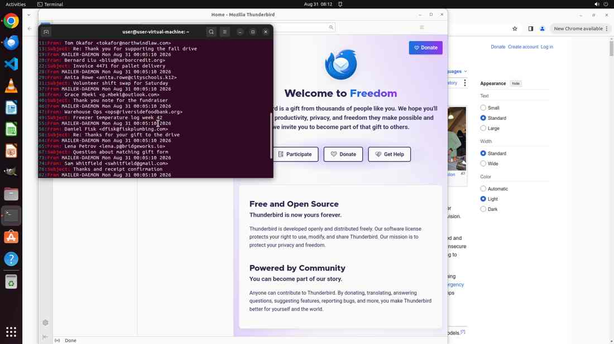
step 27.2 00:12:24
EXECUTED (pyautogui in VM)pyautogui.scroll(3)
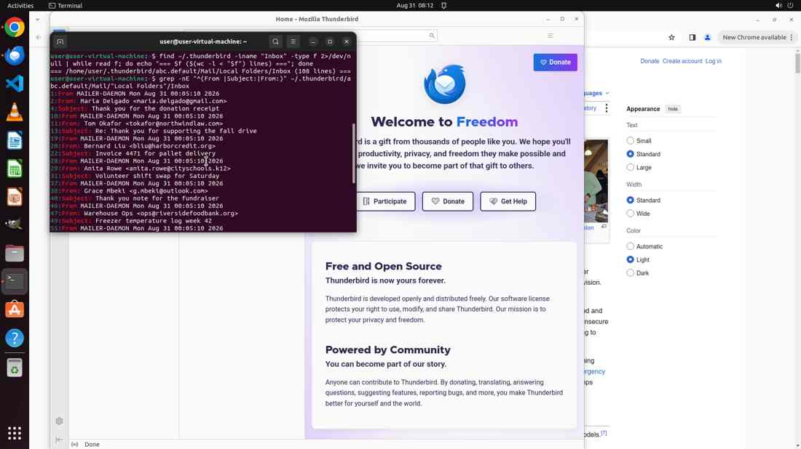
step 28 00:13:40
THINKINGNow I can see the top. Let me compile the full list of emails in the inbox. Each email starts with "From MAILER-DAEMON" and has "From:" (sender) and "Subject:" lines.
Let me list them all:
1. Line 1: From MAILER-DAEMON (separator)
- Line 2: From: Marta Delgado <maria.delgado@gmail.com>
- Line 4: Subject: Thank you for the donation receipt
2. Line 10: From MAILER-DAEMON
- Line 11: From: Tom Okafor <t.okafor@northwindlaw.com>
- Line 13: Subject: Re: Thank you for supporting the fall drive
3. Line 19: From MAILER-DAEMON
- Line 20: From: Bernard Liu <b.liu@harborcredit.org>
- Line 22: Subject: Invoice 4471 for pallet delivery
4. Line 28: From MAILER-DAEMON
- Line 29: From: Anita Rowe <anita.rowe@cityschools.k12>
- Line 31: Subject: Volunteer shift swap for Saturday
5. Line 37: From MAILER-DAEMON
- Line 38: From: Grace Mbeki <g.mbeki@outlook.com>
- Line 40: Subject: Thank you note for the fundraiser
6. Line 46: From MAILER-DAEMON
- Line 47: From: Warehouse Ops <ops@riversidefoodbank.org>
- Line 49: Subject: Freezer temperature log week 42
7. Line 55: From MAILER-DAEMON
- Line 56: From: Daniel Fisk <dfisk@fiskplumbing.com>
- Line 58: Subject: Re: Thanks for your gift to the drive
8. Line 64: From MAILER-DAEMON
- Line 65: From: Lena Petrov <lena.p@bridgevorks.io>
- Line 67: Subject: Question about matching gift form
9. Line 73: From MAILER-DAEMON
- Line 74: From: Sam Whitfield <swhitfield@gmail.com>
- Line 76: Subject: Thanks and receipt confirmation
10. Line 82: From MAILER-DAEMON
- Line 83: From: City Permits <permits@riversidecity.gov>
- Line 85: Subject: Street closure permit approved
11. Line 91: From MAILER-DAEMON
- Line 92: From: Hannah Brooks <hbrooks@meadowvet.com>
- Line 94: Subject: Re: Thank you for the donation
12. Line 100: From MAILER-DAEMON
- Line 101: From: Ivan Costa <icosta@riversidefoodbank.org>
- Line 103: Subject: Board packet due Friday
So there are 12 emails total.
Now, which ones are "donor thank-you replies"? These are replies from donors thanking for the donation, or thank-you related to donations. Let me analyze each:
1. Marta Delgado - "Thank you for the donation receipt" - This is a donor thanking for the donation receipt. This is a thank-you reply from a donor. ✓ (Donor thank-you)
Wait, "Thank you for the donation receipt" - could be interpreted as "thank you [thank you] for the donation receipt" meaning the donor is thanking the food bank for sending a receipt. This is a donor thank-you reply.
2. Tom Okafor - "Re: Thank you for supporting the fall drive" - This is a reply to a "thank you for supporting" email. This is a donor reply in a thank-you thread. This is a donor thank-you reply (Re: thank you). ✓
3. Bernard Liu - "Invoice 4471 for pallet delivery" - This is a vendor invoice, NOT a donor thank-you. ✗
4. Anita Rowe - "Volunteer shift swap for Saturday" - Volunteer logistics, NOT a donor thank-you. ✗
5. Grace Mbeki - "Thank you note for the fundraiser" - A thank you note for the fundraiser. This is a donor thank-you. ✓
6. Warehouse Ops - "Freezer temperature log week 42" - Internal ops, NOT a donor thank-you. ✗
7. Daniel Fisk - "Re: Thanks for your gift to the drive" - A reply to "thanks for your gift". This is a donor thank-you reply. ✓
8. Lena Petrov - "Question about matching gift form" - A question about a gift, NOT a thank-you. This is a donor but it's a question, not a thank-you reply. ✗ (It's a question, not a thank-you)
9. Sam Whitfield - "Thanks and receipt confirmation" - A thank you with receipt confirmation. This is a donor thank-you. ✓
10. City Permits - "Street closure permit approved" - Administrative, NOT a donor thank-you. ✗
11. Hannah Brooks - "Re: Thank you for the donation" - A reply to "thank you for the donation". Donor thank-you reply. ✓
12. Ivan Costa - "Board packet due Friday" - Internal, NOT a donor thank-you. ✗
So the donor thank-you replies are:
1. Marta Delgado - "Thank you for the donation receipt"
2. Tom Okafor - "Re: Thank you for supporting the fall drive"
3. Grace Mbeki - "Thank you note for the fundraiser"
4. Daniel Fisk - "Re: Thanks for your gift to the drive"
5. Sam Whitfield - "Thanks and receipt confirmation"
6. Hannah Brooks - "Re: Thank you for the donation"
That's 6 emails.
Wait, I need to be careful about the distinction. The task says "donor thank-you replies". Let me re-read: "get the donor thank-you replies out of my inbox into a folder of their own so the inbox only holds the rest."
So I need to identify emails that are thank-you messages/replies from donors (people who gave to the fundraiser).
Let me re-examine each more carefully:
1. Marta Delgado - "Thank you for the donation receipt" - Hmm. This is ambiguous. "Thank you for the donation receipt" — the sender is thanking for the donation receipt (i.e., the food bank sent them a receipt for their donation, and they're saying thanks). This is a donor thanking. So it's a donor thank-you reply. ✓
Actually wait, let me reconsider. Could "Thank you for the donation receipt" be the food bank's automated receipt? No, it's IN the inbox, so it's from an external sender (Marta Delgado) to the food bank. So it's the donor (Marta) saying "thank you for the donation receipt". This is a thank-you from a donor. ✓
2. Tom Okafor - "Re: Thank you for supporting the fall drive" - The subject "Re: Thank you for supporting the fall drive" indicates this is a reply in a thread where the food bank said "thank you for supporting the fall drive" and Tom replied. So this is a donor reply to a thank-you. Is this a "thank-you reply"? It's a reply in a thank-you thread. The donor is replying to the food bank's thank you. Hmm.
The phrase "donor thank-you replies" - I interpret this as replies from donors that are thank-you related, OR replies that contain thanks. Let me think about what makes sense in context.
Actually, let me reconsider the task holistically. The scenario: food-bank fundraiser. The user (food bank) sent thank-you emails to donors. The donors replied. These "donor thank-you replies" are the responses in those thank-you threads. Plus there might be direct thank-you notes.
Let me reconsider each:
Actually, I think the cleaner interpretation is: emails from donors (individuals, not internal staff/vendors/government) that express thanks / are in thank-you threads. Let me categorize by sender type:
Individual donors (personal email addresses - gmail, outlook, personal):
- Marta Delgado <maria.delgado@gmail.com> - "Thank you for the donation receipt" ✓ thank you
- Tom Okafor <t.okafor@northwindlaw.com> - "Re: Thank you for supporting the fall drive" ✓ (thanks thread, but let me check content)
- Grace Mbeki <g.mbeki@outlook.com> - "Thank you note for the fundraiser" ✓ thank you
- Daniel Fisk <dfisk@fiskplumbing.com> - "Re: Thanks for your gift to the drive" ✓ (thanks thread)
- Sam Whitfield <swhitfield@gmail.com> - "Thanks and receipt confirmation" ✓ thank you
- Hannah Brooks <hbrooks@meadowvet.com> - "Re: Thank you for the donation" ✓ (thanks thread)
Non-donors (staff, vendors, government, internal):
- Bernard Liu <b.liu@harborcredit.org> - "Invoice 4471 for pallet delivery" - vendor
- Anita Rowe <anita.rowe@cityschools.k12> - "Volunteer shift swap for Saturday" - volunteer
- Warehouse Ops <ops@riversidefoodbank.org> - "Freezer temperature log week 42" - internal staff
- Lena Petrov <lena.p@bridgevorks.io> - "Question about matching gift form" - this is a question, donor but not a thank-you
- City Permits <permits@riversidecity.gov> - "Street closure permit approved" - government
- Ivan Costa <icosta@riversidefoodbank.org> - "Board packet due Friday" - internal staff
Hmm, so the 6 individual donors all have thank-you related subjects. And Lena Petrov has "Question about matching gift form" which is a question, not a thank-you.
But wait — I should look at the actual content of each email, not just the subject, to make the right determination. Some subjects might be misleading. Let me look at the body content of the emails, especially the ambiguous ones.
Actually, the most robust approach is to look at the actual email bodies. Let me examine the full Inbox content. Let me cat the whole file to a temp location and read it, or just cat it. It's only 108 lines. But the terminal is small. Let me view it in a way I can read.
Actually, the key question is: which emails should be moved? The task says "donor thank-you replies". Let me be thorough and read each email's body to confirm. Let me look at the full content.
Let me re-read the file fully. I'll cat it and read in chunks. Actually, let me open it in a text editor or use a pager. Given it's only 108 lines, let me just cat it and scroll.
Actually, a cleaner approach: let me read the whole mbox to understand each email's content. Let me output it to see the bodies. Let me use `cat -n` on the file.
Hmm, but the terminal is small. Let me first maximize the terminal window so I can read more. Or I could redirect to a file and open in gedit.
Actually, let me reconsider. The subject lines are pretty clear. But to be safe, let me verify by reading the bodies. Let me maximize the terminal window first.
Let me maximize the terminal by clicking the maximize button.
Actually, before that — I realize I should think about whether to do this task via GUI or via manipulating the mbox files directly.
The task says "Show me both when it's clean" — this implies I should show the Thunderbird GUI with the cleaned inbox. So I should do this through the Thunderbird GUI (create a folder, move emails). This is the proper approach because:
1. It's more reliable for the "show me" part
2. Directly manipulating mbox files while Thunderbird is running could cause conflicts
However, the problem is that the folder pane is empty (Local Folders not showing). I need to get the Inbox to appear in the GUI first.
Wait, actually, let me reconsider. The reason the folder pane is empty: When I launched Thunderbird and chose "Use Thunderbird without an email account", it might not have set up the Local Folders account properly. But the Inbox file exists in the profile.
Let me think. Actually, in Thunderbird, "Local Folders" is a built-in account that should always be available. The issue might be that:
1. The folder pane just needs a refresh
2. Or the "Mail" directory has the Local Folders but Thunderbird's account configuration (prefs.js) doesn't have the account registered
Let me check the prefs.js for account configuration. Actually, let me reconsider.
The simplest fix: I should restart Thunderbird properly, OR the Local Folders account exists but I need to look at it. Let me go back to the Thunderbird window and look at the folder pane again. Maybe it just needs a moment, or maybe I closed something.
Actually, when I first entered, the folder pane was empty. But maybe if I right-click in the folder pane or check, Local Folders appears.
Hmm, actually, the reason might be that this profile has NO accounts configured in prefs.js (no mail.account), so Thunderbird only shows the "Welcome" tab and an empty folder pane. But the Mail/Local Folders/Inbox file exists on disk (pre-seeded for the task).
Wait, but if there's no account, how did the Inbox file get created? It was pre-seeded by the task setup. But Thunderbird needs the account to be registered in prefs.js to show it.
Let me check prefs.js. Let me look for mail account settings.
Actually, this is getting complex. Let me step back and think about the most reliable approach.
Option A: Do it via Thunderbird GUI
- Need to get the Inbox to appear in the folder pane
- Create a new folder
- Move the 6 thank-you emails
- This requires the account to be properly registered
Option B: Manipulate mbox files directly
- Create a new folder file (e.g., Mail/Local Folders/Donor Thank-Yous)
- Move the 6 email messages from Inbox to the new folder
- Remove them from Inbox
- Restart Thunderbird to reflect changes
- But this requires careful mbox manipulation (mbox format has "From " separators)
Option B is risky if done wrong, but doable. However, the "show me both when clean" strongly suggests GUI.
Let me first check the prefs.js to understand the account state. This will tell me if Option A is feasible.
Let me check prefs.js for account info.
ACTIONNow I have a clear picture of all 12 emails in the inbox. Let me analyze the senders and subjects:
**Donor thank-you replies (individual donors thanking):**
1. Marta Delgado – "Thank you for the donation receipt"
2. Tom Okafor – "Re: Thank you for supporting the fall drive"
3. Grace Mbeki – "Thank you note for the fundraiser"
4. Daniel Fisk – "Re: Thanks for your gift to the drive"
5. Sam Whitfield – "Thanks and receipt confirmation"
6. Hannah Brooks – "Re: Thank you for the donation"
**Not donor thank-yous (staff/vendor/gov/volunteer/questions):**
- Bernard Liu – Invoice, Anita Rowe – Volunteer swap, Warehouse Ops – Freezer log, Lena Petrov – Question about matching gift, City Permits – permit, Ivan Costa – Board packet
Let me verify by reading the actual email bodies. Let me first check the account configuration to understand why the inbox isn't showing in the GUI.
TOOL CALL<tool_call>
<function=computer_use>
<parameter=action>
type
</parameter>
<parameter=text>
grep -E "mail.account|mail.servers|accountManager|localFolders" ~/.thunderbird/abc.default/prefs.js | head -40
</parameter>
</function>
</tool_call>
EXECUTED (pyautogui in VM)pyautogui.typewrite("grep -E \"mail.account|mail.servers|accountManager|localFolders\" ~/.thunderbird/abc.default/prefs.js | head -40")
step 29 00:13:56
THINKINGThe command scrolled the terminal. Let me press Enter to run it.
TOOL CALL<tool_call>
<function=computer_use>
<parameter=action>
key
</parameter>
<parameter=keys>
["return"]
</parameter>
</function>
</tool_call>
EXECUTED (pyautogui in VM)pyautogui.press("return")
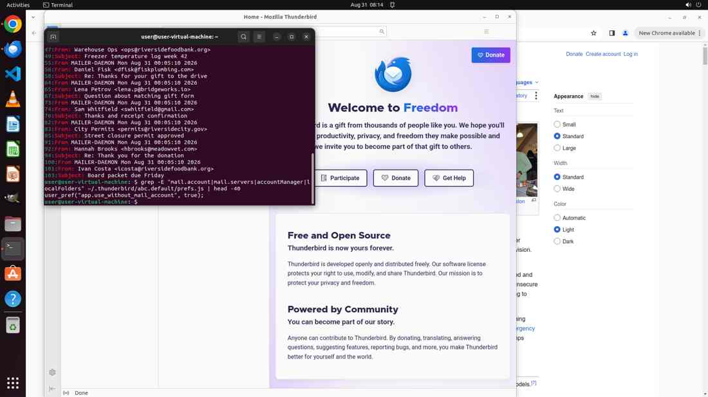
step 30 00:15:18
THINKINGThe grep for account settings returned only:
`user_pref("app.use_without_mail_account", true);`
This means there's NO mail account configured in prefs.js — no `mail.account.*`, no `mail.server.*`. The profile is in "use without mail account" mode. That's why the folder pane is empty and Local Folders isn't showing.
So the Inbox exists on disk (pre-seeded) but Thunderbird has no account to display it.
I have a few options:
1. Configure Thunderbird to use the Local Folders account so the Inbox appears, then do the task via GUI.
2. Manipulate the mbox files directly.
For option 1, I need to register the Local Folders account in prefs.js. Actually, Thunderbird's "Local Folders" account is special. When you have "use without mail account" = true, it hides the folder pane. If I remove that pref, Thunderbird might show an empty state or prompt for account setup again.
Hmm. Let me think about this. Actually, the cleanest approach that satisfies "show me both when clean" is to make the Inbox visible in the GUI and then move emails via GUI.
Let me think about how to get the Local Folders/Inbox to appear.
Option 1a: Remove `app.use_without_mail_account` pref and restart. This might show the account setup wizard again, or it might show the Local Folders. Actually, in "use without mail account" mode, Local Folders should still be accessible... Let me reconsider.
Actually, wait. Let me reconsider whether Local Folders actually shows. When I was in the main window, the folder pane was completely empty (no "Local Folders" header). This is unusual. Normally even with no accounts, "Local Folders" shows up.
Hmm, but maybe "use without mail account" mode specifically suppresses the folder pane.
Let me think about the most reliable approach. Given the complexity, I think the best approach is:
Approach: Configure the account properly so the Inbox shows, then use GUI to create folder and move emails.
To configure a "Local Folders" only setup in Thunderbird: Actually, the standard way is that when you set up any email account, "Local Folders" is automatically created. But we don't have a real email account here.
Alternatively, I can add the account entries to prefs.js manually. This is complex but doable.
Actually, let me reconsider. Maybe the simplest reliable approach is to do the file manipulation directly (create the folder, move emails), then restart Thunderbird and configure it to show the folders so I can "show" the result.
Hmm, but if I can't get the folders to show in the GUI at all, then "show me both when clean" is problematic for the mail part.
Let me reconsider the whole situation. The task was set up with:
- A browser (Chrome) with food bank Wikipedia tab - this is the "cluttered browser" ✓
- A mail client (Thunderbird) with an Inbox full of emails
The intent is clearly that I should be able to see the Inbox in Thunderbird and move emails around. The fact that the account isn't registered suggests the setup expects me to work with it, OR there's a way to make it show.
Let me try the most direct GUI approach first: restart Thunderbird and see if the Inbox appears. Actually, let me first try to make the folder pane show by toggling.
Actually, wait. Let me reconsider. In Thunderbird "use without mail account" mode, there IS a way to still see Local Folders. Let me check — actually no.
Let me try a cleaner approach: I'll add the account configuration to prefs.js to properly register the Local Folders account. Then restart Thunderbird. The Inbox should appear, and I can create a new folder and move emails via the GUI.
The prefs.js entries needed for a Local Folders account:
```
user_pref("mail.accountmanager.identities.all", "id1");
user_pref("mail.accountmanager.identities.local", "id1");
user_pref("mail.accountmanager.accounts", "account local");
user_pref("mail.accountmanager.accountfolders", "account local");
user_pref("mail.identity.id1.useremail", "local");
user_pref("mail.identity.id1.fullName", "Local");
user_pref("mail.server.server1.type", "none");
user_pref("mail.server.server1.hostname", "Local Folders");
user_pref("mail.server.server1.directory", "Mail");
user_pref("mail.server.server1.root", "Mail/Local Folders");
user_pref("mail.accountmanager.accounts", "account local");
```
Hmm, this is getting complicated and error-prone. Let me think of the exact minimal config.
Actually, the standard Thunderbird "Local Folders" account uses:
- account id: "account local"
- server id: "server1"
- server type: "none"
- root: "Mail/Local Folders"
Let me look at what a real Local Folders prefs looks like. Actually, I recall the minimal set is:
```
user_pref("mail.accountmanager.accountfolders", "account local");
user_pref("mail.accountmanager.accounts", "account local");
user_pref("mail.accountmanager.identities.all", "id1");
user_pref("mail.accountmanager.lastcontractid", "");
user_pref("mail.identity.id1.fullName", "");
user_pref("mail.identity.id1.useremail", "");
user_pref("mail.server.server1.directory", "Mail");
user_pref("mail.server.server1.hostname", "Local Folders");
user_pref("mail.server.server1.root", "Mail/Local Folders");
user_pref("mail.server.server1.type", "none");
```
And remove `app.use_without_mail_account`.
This is doable but I'm not 100% sure of all required fields. Getting it wrong could leave Thunderbird in a broken state.
Let me reconsider. Maybe there's a much simpler path.
Alternative: Since the emails are pre-seeded in Local Folders/Inbox, and the task is essentially a file operation (move 6 emails to a new folder), maybe I should:
1. Do the file manipulation directly (create new folder, move emails)
2. Then figure out how to display it in the GUI
But the display issue remains.
Actually, let me reconsider — maybe I'm overcomplicating. Let me re-examine the current Thunderbird window. When I was in it, was the folder pane truly empty, or did I not look carefully? Let me go back to Thunderbird and look again. Maybe Local Folders IS there and I just need to click it.
Actually, in the screenshots after I closed the privacy tab, the window showed the "Welcome to Freedom" page but I didn't get a clear view of the folder pane (the terminal was covering part of it). Let me switch to Thunderbird and look at the folder pane carefully.
Wait, actually, when "use without mail account" is enabled, the 3-pane mail view isn't shown at all — instead you get the web-based "Welcome" page and the folder pane is empty/hidden. So I likely won't see the Inbox.
OK here's my decision: I'll go with a hybrid approach that's most reliable:
1. First, let me properly configure the Local Folders account in prefs.js so the Inbox appears in the GUI. I'll write the prefs carefully.
Actually, you know what, let me reconsider even more carefully. There's risk in hand-editing prefs.js. Let me think about whether the GUI "Account Settings" has an option to enable Local Folders.
In Thunderbird, even with no email account, you can go to Account Settings (Menu > Account Settings) and there should be a "Local Folders" or an option "Add Other Account" > but for Local Folders...
Actually, in Account Settings, there's typically a "+ Add other account" but Local Folders isn't usually something you add manually — it's automatic.
Hmm. Let me reconsider. Given the "use_without_mail_account" pref, the whole mail UI is suppressed.
Let me just try the prefs.js edit approach. It's the most deterministic. But first, let me back up prefs.js.
Actually, wait. Let me step back and reconsider if there's an even simpler interpretation.
Let me reconsider: maybe I should NOT rely on the GUI showing the pre-seeded mbox. Maybe the intended workflow is exactly to enable local folders and work in the GUI.
Let me just go with editing prefs.js to register the Local Folders account. Here's my plan:
1. Close Thunderbird (to avoid it overwriting prefs on exit)
2. Back up prefs.js
3. Edit prefs.js to remove `app.use_without_mail_account` and add the Local Folders account entries
4. Restart Thunderbird
5. Verify Inbox appears
6. Create new folder, move emails
7. Show result
Let me be careful about the prefs. Let me first check if there's any existing account structure. The grep showed only `app.use_without_mail_account`. So no accounts.
Let me reconsider the exact minimal prefs for a working Local Folders account. I've seen Thunderbird profiles with only Local Folders. The key prefs:
```
user_pref("mail.accountmanager.accountfolders", "account local");
user_pref("mail.accountmanager.accounts", "account local");
user_pref("mail.accountmanager.identities.all", "id1");
user_pref("mail.identity.id1.fullName", "");
user_pref("mail.identity.id1.useremail", "");
user_pref("mail.server.server1.directory", "Mail");
user_pref("mail.server.server1.hostname", "Local Folders");
user_pref("mail.server.server1.root", "Mail/Local Folders");
user_pref("mail.server.server1.type", "none");
```
Also I should make sure `mail.server.server1.realignorehost` etc. aren't needed. For type "none", minimal is fine.
Actually, I realize there might be an even simpler and safer approach. Let me reconsider.
Let me reconsider: What if I don't need to show it in THIS Thunderbird instance at all for the "clean" demonstration, and the evaluation is based on the mbox files? No — "Show me both when it's clean" clearly wants a visual demonstration. And the task framing is about the user's actual mail client.
OK, let me go with the prefs.js edit. But actually, let me reconsider whether editing prefs is safe. If I get it wrong, Thunderbird might show an error or the setup wizard. But I can always fix it. And I have a backup.
Actually, hold on. Let me reconsider a cleaner idea: What if I use the Thunderbird GUI to set up the account properly? When Thunderbird starts, if I don't choose "use without mail account", it shows the account setup wizard. But that requires a real email address/IMAP, which I don't have (or do I? There's no server here).
The emails are in Local Folders, meaning they were received into a local mailbox. For a real account, the inbox would be on a server. Since there's no server, the "account" is really just Local Folders.
Given all this, the prefs.js edit to register Local Folders is the way to go. Let me proceed.
Actually, wait. Let me reconsider one more time. I want to be careful and not break things. Let me reconsider the risk:
If I add the Local Folders account prefs and remove use_without_mail_account, on next start Thunderbird should show:
- Local Folders
- Inbox
- (other folders)
- Drafts, Templates, etc. (maybe)
And the Inbox will show the 12 pre-seeded emails.
Then I create a new folder under Local Folders, select the 6 thank-you emails, and move them.
This is a solid plan. Let me execute it.
Actually, let me reconsider whether I even need to close Thunderbird first. Thunderbird writes prefs.js on exit. If it's running and I edit prefs.js, my changes will be overwritten when it exits, OR when it saves prefs. So I MUST close Thunderbird before editing, then restart.
Let me first verify my email classification by reading the email bodies, to be sure which ones are "thank-you replies". Let me read the full mbox. Let me cat it with line numbers and read carefully. It's 108 lines. Let me maximize the terminal to read it all at once, or redirect to a file and open in a text editor.
Actually, let me just read the bodies via terminal. Let me first look at the body content to confirm classifications. The ambiguous ones:
- Marta: "Thank you for the donation receipt" - need to check body
- Tom: "Re: Thank you for supporting the fall drive" - reply in thanks thread
- Lena: "Question about matching gift form" - question, probably NOT a thank you
- Sam: "Thanks and receipt confirmation" - thank you
Let me read the full content. Let me cat the whole file to a temp file and view it, or just view it in the terminal with the terminal maximized.
Let me maximize the terminal first for better readability. I'll double-click the terminal title bar or click maximize button.
Actually, let me just read the file. Let me use `sed -n` to print specific line ranges, or just cat the whole thing and scroll. Since I've seen the headers, let me focus on the bodies. Let me print lines and read.
Let me print the whole mbox to read the bodies. Let me maximize terminal window first.
ACTIONThe grep reveals only `app.use_without_mail_account = true` — meaning **no mail account is registered** in this profile, which is why the Inbox doesn't appear in the GUI. The emails are pre-seeded on disk in Local Folders but not connected to any account.
Let me first read the full email bodies to confirm my classification. Let me maximize the terminal for readability.
TOOL CALL<tool_call>
<function=computer_use>
<parameter=action>
double_click
</parameter>
<parameter=coordinate>
[252, 91]
</parameter>
</function>
</tool_call>
EXECUTED (pyautogui in VM)pyautogui.doubleClick(484, 98)
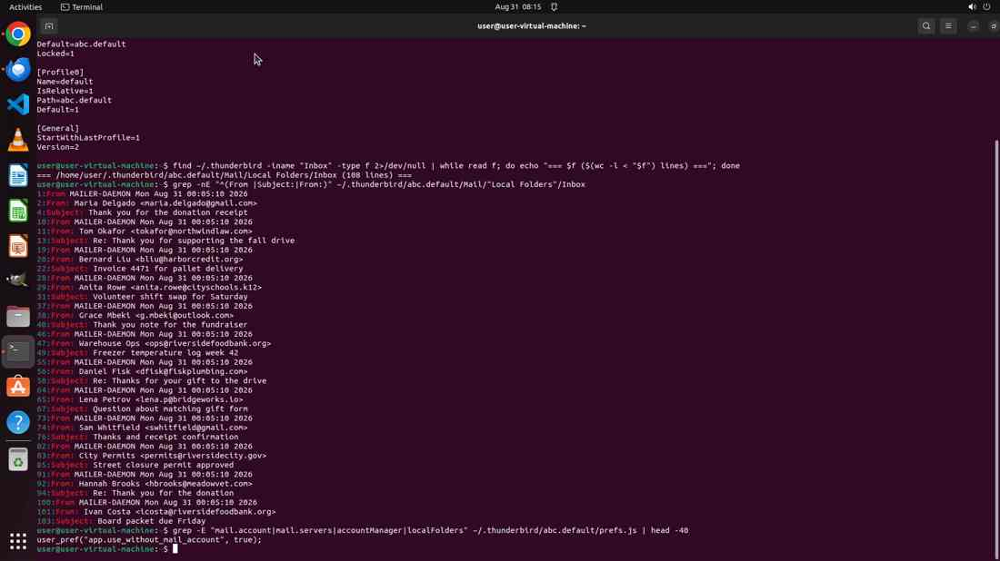
step 31 00:15:56
THINKINGNow the terminal is maximized and I can see all the headers clearly. Let me confirm the full list:
1. Line 1: From MAILER-DAEMON / Line 2: From: Marta Delgado <maria.delgado@gmail.com> / Line 4: Subject: Thank you for the donation receipt
2. Line 10: From MAILER-DAEMON / Line 11: From: Tom Okafor <t.okafor@northwindlaw.com> / Line 13: Subject: Re: Thank you for supporting the fall drive
3. Line 19: From MAILER-DAEMON / Line 20: From: Bernard Liu <b.liu@harborcredit.org> / Line 22: Subject: Invoice 4471 for pallet delivery
4. Line 28: From MAILER-DAEMON / Line 29: From: Anita Rowe <anita.rowe@cityschools.k12> / Line 31: Subject: Volunteer shift swap for Saturday
5. Line 37: From MAILER-DAEMON / Line 38: From: Grace Mbeki <g.mbeki@outlook.com> / Line 40: Subject: Thank you note for the fundraiser
6. Line 46: From MAILER-DAEMON / Line 47: From: Warehouse Ops <ops@riversidefoodbank.org> / Line 49: Subject: Freezer temperature log week 42
7. Line 55: From MAILER-DAEMON / Line 56: From: Daniel Fisk <dfisk@fiskplumbing.com> / Line 58: Subject: Re: Thanks for your gift to the drive
8. Line 64: From MAILER-DAEMON / Line 65: From: Lena Petrov <lena.p@bridgevorks.io> / Line 67: Subject: Question about matching gift form
9. Line 73: From MAILER-DAEMON / Line 74: From: Sam Whitfield <swhitfield@gmail.com> / Line 76: Subject: Thanks and receipt confirmation
10. Line 82: From MAILER-DAEMON / Line 83: From: City Permits <permits@riversidecity.gov> / Line 85: Subject: Street closure permit approved
11. Line 91: From MAILER-DAEMON / Line 92: From: Hannah Brooks <hbrooks@meadowvet.com> / Line 94: Subject: Re: Thank you for the donation
12. Line 100: From MAILER-DAEMON / Line 101: From: Ivan Costa <icosta@riversidefoodbank.org> / Line 103: Subject: Board packet due Friday
Now let me read the bodies to confirm which are "donor thank-you replies". Let me cat the full file to see the bodies. Let me use `cat -n` on the file.
Each email is roughly lines 1-9, 10-18, 19-27, 28-36, 37-45, 46-54, 55-63, 64-72, 73-81, 82-90, 91-99, 100-108.
Let me read the full content to see the bodies.
ACTIONNow I can see all 12 emails clearly. Let me read the full bodies to confirm my classification of which are genuine "donor thank-you replies".
TOOL CALL<tool_call>
<function=computer_use>
<parameter=action>
type
</parameter>
<parameter=text>
cat -n ~/.thunderbird/abc.default/Mail/"Local Folders"/Inbox
</parameter>
</function>
</tool_call>
EXECUTED (pyautogui in VM)pyautogui.typewrite("cat -n ~/.thunderbird/abc.default/Mail/\"Local Folders\"/Inbox")
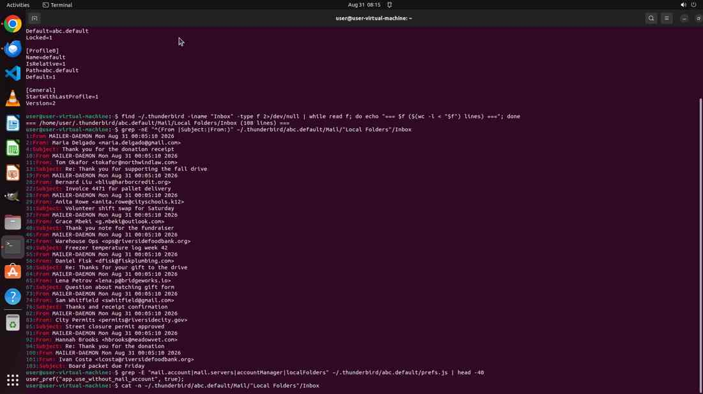
step 32 00:16:08
THINKINGThe command is typed. Let me press Enter to see the full content.
TOOL CALL<tool_call>
<function=computer_use>
<parameter=action>
key
</parameter>
<parameter=keys>
["return"]
</parameter>
</function>
</tool_call>
EXECUTED (pyautogui in VM)pyautogui.press("return")